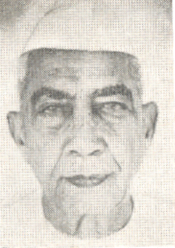

গ. গোপাল
মূল মেয়াদ:
অর্থ মন্ত্রণালয়, প্রতিমন্ত্রী
১৯৭৯ - ১৯৮০
সংসদ বিষয়ক মন্ত্রণালয়, প্রতিমন্ত্রী
১৯৭৯ - ১৯৮০
চরণ সিং মন্ত্রণালয়
সংসদ বিষয়ক মন্ত্রণালয়
প্রতিমন্ত্রী
অর্থ মন্ত্রণালয়
প্রতিমন্ত্রী
চরণ সিং মন্ত্রণালয়

1_Upload_2459.pdf

চরণ সিং
o-Charan_Singh.htmlপ্রধানমন্ত্রী
২৮ জুলাই ১৯৭৯ - ১৪ জানুয়ারী ১৯৮০
গ. গোপাল
o-K_Gopal.htmlপ্রতিমন্ত্রী
৮ আগস্ট ১৯৭৯ - ১৪ জানুয়ারী ১৯৮০
প্রাসঙ্গিক আদেশ
1_Upload_2459.pdf[1]৮ আগ ১৯৭৯পোর্টফোলিও পরিবর্তন1_Upload_2452.pdf[23]১৬ আগ ১৯৭৯মন্ত্রিপরিষদ1_Upload_2454.pdf[25]২৭ আগ ১৯৭৯মন্ত্রিপরিষদ1_Upload_2472.pdf[2]২৭ অক্টো ১৯৭৯পোর্টফোলিও পরিবর্তন